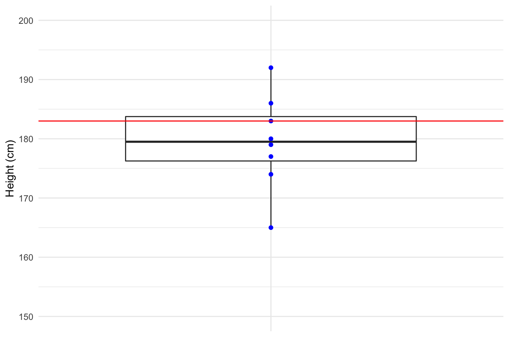
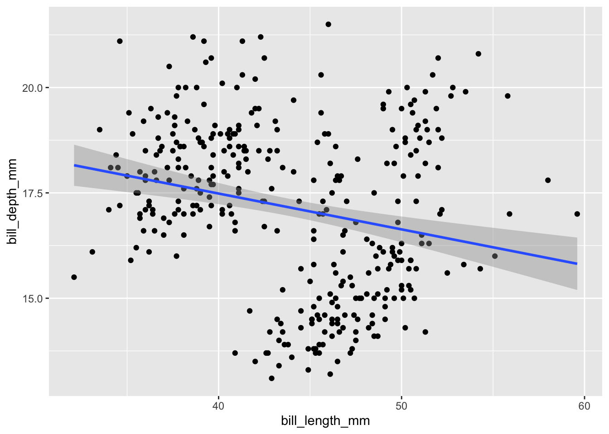
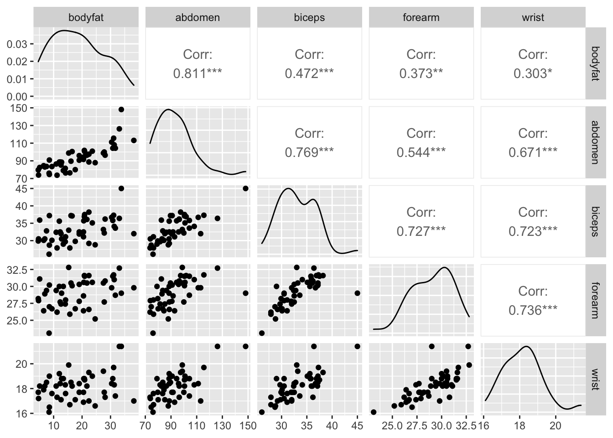

Thursday, October 21, 2022
Today
- Multiple variable linear regression
Multiple variable linear regression
Multiple variable (multi-variable) linear regression is used to model a dependent variable when there is more than one explanatory variable.
Everything from simple (single explanatory variable) regression carries over to multiple variable linear regression. There is a slope coefficient for each explanatory variable.
Note: You regress the response variable onto the explanatory variables. You do not perform a regression of the variables or regress y AND x or regress y with respect to x. These are ambiguous at best and misleading at worse.
With one explanatory variable the regression model is described with a straight line. With two explanatory variables the regression model is described with a flat surface.
To see this consider a three dimensional scatter plot created with the scatterplot3d() from the {scatterplot3d} package and add the regression plane.
The data comes from the trees data frame. You start with a (simple) linear regression. You regress timber volume (Volume) on tree girth (Girth) and add the model as a line on the scatter plot.
Here I use the plot() method and abline() are base R graphics functions.
model1 <- lm(Volume ~ Girth,
data = trees)
plot(trees$Volume ~ trees$Girth, pch = 16,
xlab = "Tree diameter (in)",
ylab = "Timber volume (cubic ft)")
abline(model1)
Next you regress timber volume (Volume) on girth (Girth) and height (Height) and use the scatterplot3d() function to plot the scatter of points. The resulting plane3d() function takes the regression model and adds the surface.
model2 <- lm(Volume ~ Girth + Height, data = trees)
s3d <- scatterplot3d::scatterplot3d(trees, angle = 55, scale.y = .7, pch = 16,
xlab = "Tree diameter (in)",
zlab = "Timber volume (cubic ft)",
ylab = "Tree height (ft)")
s3d$plane3d(model2)
The graph shows that timber volume increases with tree diameter and tree height.
By changing the view angle (angle =) you can see that some observations are above the surface and some are below.
s3d <- scatterplot3d(trees, angle = 32, scale.y = .7, pch = 16,
xlab = "Tree diameter (in)",
zlab = "Timber volume (cubic ft)",
ylab = "Tree height (ft)")
s3d$plane3d(model2)The distance along the vertical axis from the observation to the model surface is the residual. So even though there are two explanatory variables there is only one set of residuals as with simple regression.
The multiple linear regression model is given by: \[ \hat y = \hat \beta_0 + \hat \beta_1 x_{i1} + \hat \beta_2 x_{i2} + \cdots + \hat \beta_p x_{ip} \]
The explanatory variables are written with a double subscript (there are \(p\) of them) to indicate the observation number (1st subscript) and the variable number (2nd subscript).
Each explanatory variable gets a coefficient, so there are \(p + 1\) of them (including \(\hat \beta_0\), the y-intercept).
Now for each observation \(i\) there is an observed response (\(y_i\)) and a predicted response (\(\hat y_i\)) and the difference is called the residual.
The residuals are given by the equation \[ y_i - \hat y_i = \varepsilon_i \] and are assumed to be described by a set of normal distributions each centered on zero and having the same variance (\(\sigma^2\)).
A grid of scatter plots
As with simple linear regression, before you model the data you should make a scatter plot. With more than one explanatory variable you rely on a series of scatter plots.
Consider the data set PetrolConsumption.txt that has gasoline consumption by state for a given year.
loc <- "http://myweb.fsu.edu/jelsner/temp/data/PetrolConsumption.txt"
PC.df <- readr::read_table(loc)##
## ── Column specification ────────────────────────────────────────────────────────
## cols(
## Petrol.Tax = col_double(),
## Avg.Inc = col_double(),
## Pavement = col_double(),
## Prop.DL = col_double(),
## Petrol.Consumption = col_double()
## )head(PC.df)## # A tibble: 6 × 5
## Petrol.Tax Avg.Inc Pavement Prop.DL Petrol.Consumption
## <dbl> <dbl> <dbl> <dbl> <dbl>
## 1 9 3571 1976 0.525 541
## 2 9 4092 1250 0.572 524
## 3 9 3865 1586 0.58 561
## 4 7.5 4870 2351 0.529 414
## 5 8 4399 431 0.544 410
## 6 10 5342 1333 0.571 457Columns in the data frame include petrol (gas) tax (Petrol.Tax) [cents per gallon], per capita income (Avg.Inc) [$/10], miles of paved highway (Pavement), proportion of drivers (Prop.DL), and consumption of petrol (Petrol.Consumption) [millions of gallons].
First create a panel of scatter plots using all the variables in the data frame with the GGally::ggpairs() function from the {GGally} package.
GGally::ggpairs(PC.df)## Registered S3 method overwritten by 'GGally':
## method from
## +.gg ggplot2
The plots are arranged in a grid. The rows correspond to the variables as given from left to right in the data frame. The first column in the data set is Petrol.Tax then Avg.Inc, etc.
The plot in row 2, column 1 is shows Avg.Inc on the vertical axis and Petrol.Tax on the horizontal axis. The value in the diagonal panel (row 1, column 2) is the Pearson correlation coefficient between Avg.Inc and Petrol.Tax.
The panel in row 3 column 1 shows Pavement on the vertical axis and Petrol.Tax on the horizontal axis.
You want to quantify how much of the variation in gas consumption at the state level is statistically explained by the variables taxes, income, amount of pavement, and proportional of drivers.
So gas consumption (the variable Petrol.Consumption) is your response variable and you focus on the subset of scatter plots (in row 5) where Petrol.Consumption is on the vertical axis in each plot.
By eye, which of the variables appears to you to be the most (least) related to gas consumption?
The variable with the highest correlation with gas consumption is Prop.DL, the proportion of people with a drivers license. The correlation between these two variables is .7. With more people driving, gas consumption increases.
Gas taxes have an inverse relationship with gas consumption. This is seen in the scatter plot in the lower left corner of the grid and by the negative correlation (-.45) in the upper right corner.
Plots along the diagonal are density plots of each of the variables individually.
Correlations arranged in a matrix like the grid of scatter plots is printed using the cor() function.
cor(PC.df)## Petrol.Tax Avg.Inc Pavement Prop.DL
## Petrol.Tax 1.00000000 0.01266516 -0.52213014 -0.2880372
## Avg.Inc 0.01266516 1.00000000 0.05016279 0.1570701
## Pavement -0.52213014 0.05016279 1.00000000 -0.0641295
## Prop.DL -0.28803717 0.15707008 -0.06412950 1.0000000
## Petrol.Consumption -0.45128028 -0.24486207 0.01904194 0.6989654
## Petrol.Consumption
## Petrol.Tax -0.45128028
## Avg.Inc -0.24486207
## Pavement 0.01904194
## Prop.DL 0.69896542
## Petrol.Consumption 1.00000000The correlations between the explanatory variables and gas consumption are located in the last column of the matrix under Petrol.Consumption.
From the plots and the correlation matrix you anticipate the proportion of people with drivers licenses to be the most important variable in a regression model and the coefficient on this term will be a positive number.
Further you anticipate that the gas tax will be an important variable but the coefficient on this term will be a negative number.
Fit a multiple variable regression model
You fit a multiple variable regression model to the gas data using the lm() function. You put the name of the response variable (Petrol.Consumption) to the left of the ~ and then the names of the explanatory variables to the right. After each variable you include a + sign (except for the last variable).
Here you assign the model to an object called model1.
model1 <- lm(Petrol.Consumption ~ Prop.DL + Pavement + Avg.Inc + Petrol.Tax,
data = PC.df)
model1##
## Call:
## lm(formula = Petrol.Consumption ~ Prop.DL + Pavement + Avg.Inc +
## Petrol.Tax, data = PC.df)
##
## Coefficients:
## (Intercept) Prop.DL Pavement Avg.Inc Petrol.Tax
## 3.773e+02 1.336e+03 -2.426e-03 -6.659e-02 -3.479e+01You have four explanatory variables so the model has five coefficients. There is a coefficient for the y-intercept (Intercept).
Looking only at the signs on the numbers under the variable names you see that gas consumption increases with the proportion of drivers and decreases with the amount of pavement, average income and gas tax. Why might gas consumption decrease with increasing income?
The model is interpreted as follows:
Average gas consumption [millions of gallons] = 377.3 + 1336 * Prop.DL – 0.0024 * Pavement – 0.06659 * Avg.Inc – 34.79 * Petrol.Tax
The model says that for every 1 percentage point increase in the proportion of drivers (to overall population), the mean gas consumption increases by 1336 million gallons (1.336 billion gallons) assuming Pavement, Avg.Inc and Petrol.Tax are constant.
For every 1 cent/gallon increase in taxes, mean gas consumption decreases by 34.79 million gallons assuming the three other variables are held constant.
The statistically significant variables in the model for explaining gas consumption are identified by looking at the table of coefficients from the summary() function.
summary(model1)##
## Call:
## lm(formula = Petrol.Consumption ~ Prop.DL + Pavement + Avg.Inc +
## Petrol.Tax, data = PC.df)
##
## Residuals:
## Min 1Q Median 3Q Max
## -122.03 -45.57 -10.66 31.53 234.95
##
## Coefficients:
## Estimate Std. Error t value Pr(>|t|)
## (Intercept) 3.773e+02 1.855e+02 2.033 0.048207 *
## Prop.DL 1.336e+03 1.923e+02 6.950 1.52e-08 ***
## Pavement -2.426e-03 3.389e-03 -0.716 0.477999
## Avg.Inc -6.659e-02 1.722e-02 -3.867 0.000368 ***
## Petrol.Tax -3.479e+01 1.297e+01 -2.682 0.010332 *
## ---
## Signif. codes: 0 '***' 0.001 '**' 0.01 '*' 0.05 '.' 0.1 ' ' 1
##
## Residual standard error: 66.31 on 43 degrees of freedom
## Multiple R-squared: 0.6787, Adjusted R-squared: 0.6488
## F-statistic: 22.71 on 4 and 43 DF, p-value: 3.907e-10You ignore the Intercept term. It represents the value of the response variable where the model line intersects the \(y\)-axis.
You see that three of the four coefficients have a \(p\)-value at or less than .01. Only the coefficient on the variable Pavement has a \(p\)-value greater than .15. Therefore this variable is not significant in explaining the variance in the response variable (the coefficient is not statistically significant from a value of zero).
The null hypothesis is that the variable is NOT important to the model. The \(p\)-value on the variable’s coefficient is evidence in support of the null hypothesis. The larger the \(p\)-value the more evidence you have that the variable is not important to the model.
In determining which variables are most important in the regression model, the coefficient estimates (effect sizes) cannot be compared directly because they do not have the same units.
Key idea: A regression coefficient has units of the response variable divided by the units of the explanatory variable. But the explanatory variables have different units. For example, Petrol.Tax has units of cents per gallon and Pavement has units of miles.
So instead of comparing the values of the coefficients directly (i.e., instead of looking in the column labeled Estimate) you look at the column labeled t value.
The magnitude of the \(t\) values are inter comparable. They are coefficients that have been standardized by dividing by the corresponding standard error. Accordingly, Avg.Inc is more more important than Petrol.Tax even though .0666 is much smaller than 34.79.
Key point: The order of the explanatory variables does not change the magnitude or the sign of the corresponding coefficients.
summary(lm(Petrol.Consumption ~ Pavement + Petrol.Tax + Avg.Inc + Prop.DL,
data = PC.df))##
## Call:
## lm(formula = Petrol.Consumption ~ Pavement + Petrol.Tax + Avg.Inc +
## Prop.DL, data = PC.df)
##
## Residuals:
## Min 1Q Median 3Q Max
## -122.03 -45.57 -10.66 31.53 234.95
##
## Coefficients:
## Estimate Std. Error t value Pr(>|t|)
## (Intercept) 3.773e+02 1.855e+02 2.033 0.048207 *
## Pavement -2.426e-03 3.389e-03 -0.716 0.477999
## Petrol.Tax -3.479e+01 1.297e+01 -2.682 0.010332 *
## Avg.Inc -6.659e-02 1.722e-02 -3.867 0.000368 ***
## Prop.DL 1.336e+03 1.923e+02 6.950 1.52e-08 ***
## ---
## Signif. codes: 0 '***' 0.001 '**' 0.01 '*' 0.05 '.' 0.1 ' ' 1
##
## Residual standard error: 66.31 on 43 degrees of freedom
## Multiple R-squared: 0.6787, Adjusted R-squared: 0.6488
## F-statistic: 22.71 on 4 and 43 DF, p-value: 3.907e-10Key point: The model does not change with a linear transformation of the variables. For example, if you multiply Pavement by 20, the coefficient and standard error change accordingly, but not the \(t\) value or the corresponding \(p\)-value.
summary(lm(Petrol.Consumption ~ I(Pavement * 20) + Petrol.Tax + Avg.Inc + Prop.DL,
data = PC.df))##
## Call:
## lm(formula = Petrol.Consumption ~ I(Pavement * 20) + Petrol.Tax +
## Avg.Inc + Prop.DL, data = PC.df)
##
## Residuals:
## Min 1Q Median 3Q Max
## -122.03 -45.57 -10.66 31.53 234.95
##
## Coefficients:
## Estimate Std. Error t value Pr(>|t|)
## (Intercept) 3.773e+02 1.855e+02 2.033 0.048207 *
## I(Pavement * 20) -1.213e-04 1.695e-04 -0.716 0.477999
## Petrol.Tax -3.479e+01 1.297e+01 -2.682 0.010332 *
## Avg.Inc -6.659e-02 1.722e-02 -3.867 0.000368 ***
## Prop.DL 1.336e+03 1.923e+02 6.950 1.52e-08 ***
## ---
## Signif. codes: 0 '***' 0.001 '**' 0.01 '*' 0.05 '.' 0.1 ' ' 1
##
## Residual standard error: 66.31 on 43 degrees of freedom
## Multiple R-squared: 0.6787, Adjusted R-squared: 0.6488
## F-statistic: 22.71 on 4 and 43 DF, p-value: 3.907e-10Side note: Here the multiplication is done inside the function I() to restrict the interpretation of the operator * to multiplication rather than interaction.
The multiple R-squared value is .68 which means the model explains 68% of the variation in gas consumption.
Note that the \(p\)-value on the model (given on the last line of the output) is small. The null hypothesis in this case is that none of the variables are important in explaining petrol consumption. You reject this null hypothesis.
Should you remove a variable from the model?
A model is said to be simpler if it has fewer explanatory variables.
You try another model without the Pavement variable (the variable that was not significant in the previous model).
model2 <- lm(Petrol.Consumption ~ Prop.DL + Avg.Inc + Petrol.Tax,
data = PC.df)
summary(model2)##
## Call:
## lm(formula = Petrol.Consumption ~ Prop.DL + Avg.Inc + Petrol.Tax,
## data = PC.df)
##
## Residuals:
## Min 1Q Median 3Q Max
## -110.10 -51.22 -12.89 24.49 238.77
##
## Coefficients:
## Estimate Std. Error t value Pr(>|t|)
## (Intercept) 307.32790 156.83067 1.960 0.05639 .
## Prop.DL 1374.76841 183.66954 7.485 2.24e-09 ***
## Avg.Inc -0.06802 0.01701 -3.999 0.00024 ***
## Petrol.Tax -29.48381 10.58358 -2.786 0.00785 **
## ---
## Signif. codes: 0 '***' 0.001 '**' 0.01 '*' 0.05 '.' 0.1 ' ' 1
##
## Residual standard error: 65.94 on 44 degrees of freedom
## Multiple R-squared: 0.6749, Adjusted R-squared: 0.6527
## F-statistic: 30.44 on 3 and 44 DF, p-value: 8.235e-11The remaining explanatory variables are significant. The values are slightly different as the variance in the gas consumption attributed to Pavement is now spread across the remaining variables.
Key point: Removing an explanatory variable changes the coefficient values on the remain variables in the model.
The proportion of the population with licenses is the most important variable. It has the largest \(t\) value (in absolute value).
By removing a variable the R-squared statistic DECREASES to .675. This is always the case with a simpler model (fewer explanatory variables). Thus the R-squared statistic should not be used to compare models unless the models have the same number of explanatory variables.
One alternative for comparing models is the adjusted R squared. It is a modification of the R squared that accounts for the number of explanatory variables in the model.
Key point: The adjusted R squared increases only if the new variable improves the model more than would be expected by chance. The adjusted R squared can be negative, and will always be less than or equal to R squared.
To see the importance of the adjusted R squared, first note that Petrol.Tax has the smallest \(t\) value. Suppose you remove it. What happens?
model3 <- lm(Petrol.Consumption ~ Prop.DL + Avg.Inc,
data = PC.df)
summary(model3)##
## Call:
## lm(formula = Petrol.Consumption ~ Prop.DL + Avg.Inc, data = PC.df)
##
## Residuals:
## Min 1Q Median 3Q Max
## -115.46 -45.93 -13.76 30.12 243.50
##
## Coefficients:
## Estimate Std. Error t value Pr(>|t|)
## (Intercept) 7.83709 122.46304 0.064 0.949257
## Prop.DL 1525.04289 188.29687 8.099 2.47e-10 ***
## Avg.Inc -0.07092 0.01821 -3.895 0.000323 ***
## ---
## Signif. codes: 0 '***' 0.001 '**' 0.01 '*' 0.05 '.' 0.1 ' ' 1
##
## Residual standard error: 70.72 on 45 degrees of freedom
## Multiple R-squared: 0.6175, Adjusted R-squared: 0.6005
## F-statistic: 36.33 on 2 and 45 DF, p-value: 4.064e-10The adjusted R squared is smaller, so you conclude that this variable should be kept in the model.
Thus you settle on a final model: Average gas consumption [millions of gallons] = 307.3 + 1375 x Prop.DL - .06802 x Avg.Inc - 29.48 x Petrol.Tax
Checking on the model assumptions
Next you need to check the model assumptions. Equal variance: You saw how to check this assumption by using the cut() function and creating side-by-side box plots.
Another way is to plot the standardized residuals on the vertical axis and the fitted values along the horizontal axis. Adding a smoothed curve and the y equal zero line makes it easy to see whether there is a pattern to the residuals.
library(ggplot2)
model2.df <- fortify(model2)
ggplot(data = model2.df,
mapping = aes(x = .fitted, y = .stdresid)) +
geom_point() +
geom_smooth() +
geom_hline(yintercept = 0)## `geom_smooth()` using method = 'loess' and formula 'y ~ x'
In this case: no pattern in the residuals.
Normality. First you use the sm.density() function.
res <- residuals(model2)
sm::sm.density(res, xlab = "Model Residuals", model = "Normal")
You also examine a quantile-normal plot of the residuals.
qqnorm(model2$residuals)
qqline(model2$residuals)
These plots indicate some evidence against normality and constant variance. The fact that the residuals do not exactly follow a normal distribution decreases the confidence you can place on your inferences (e.g., stating a particular variable is significant in explaining variations in the response variable).
To improve model adequacy you might transform the response variable or use a weighted regression model. We will return to this shortly.
Example: Predicting house prices
A Realtor can use multiple variable regression to justify a selling price for a house based on a list of features the house has. Here you consider a data file (houseprice.txt) containing a random sample of 107 home sales in Albuquerque, New Mexico during the period February 15 through April 30, 1993 (Albuquerque Board of Realtors, 1993).
Get the data.
url <- "http://myweb.fsu.edu/jelsner/temp/data/houseprice.txt"
hp.df <- readr::read_table(url)##
## ── Column specification ────────────────────────────────────────────────────────
## cols(
## price = col_double(),
## sqft = col_double(),
## custom = col_double(),
## corner = col_double(),
## taxes = col_double()
## )head(hp.df)## # A tibble: 6 × 5
## price sqft custom corner taxes
## <dbl> <dbl> <dbl> <dbl> <dbl>
## 1 2050 2650 1 0 1639
## 2 2080 2600 1 0 1088
## 3 2150 2664 1 0 1193
## 4 2150 2921 1 0 1635
## 5 1999 2580 1 0 1732
## 6 1900 2580 0 0 1534The data include:
price: Selling price in $100ssqft: Square feet of living spacecustom: Whether the house was built with custom features (1) or not (0)corner: Whether the house sits on a corner lot (1) or not (0)taxes: Annual taxes in $
Here you assume that taxes determine price. In some (many?) real estate contexts the causality would work in the opposite direction: selling price affects appraisals and hence taxes.
Use the ggpairs() function from the {GGally} package to get a look at your data.
GGally::ggpairs(hp.df)
As expected selling prices increase with size of the living space and with taxes. Scatter plots are not very informative for binary variables (variables with only two values).
The response variable is selling price (price). You begin with living space (sqft) and whether the house was custom built as the two explanatory variables.
model1 <- lm(price ~ sqft + custom,
data = hp.df)
summary(model1)##
## Call:
## lm(formula = price ~ sqft + custom, data = hp.df)
##
## Residuals:
## Min 1Q Median 3Q Max
## -1034.29 -105.79 10.53 81.55 648.11
##
## Coefficients:
## Estimate Std. Error t value Pr(>|t|)
## (Intercept) 143.45904 68.76297 2.086 0.03940 *
## sqft 0.53696 0.04299 12.489 < 2e-16 ***
## custom 172.20996 54.51139 3.159 0.00207 **
## ---
## Signif. codes: 0 '***' 0.001 '**' 0.01 '*' 0.05 '.' 0.1 ' ' 1
##
## Residual standard error: 199.3 on 104 degrees of freedom
## Multiple R-squared: 0.7357, Adjusted R-squared: 0.7306
## F-statistic: 144.8 on 2 and 104 DF, p-value: < 2.2e-16The model indicates that for a one square foot increase in living space, selling prices increase by $54 controlling for whether or not it has custom features. You move the decimal place on the coefficient to the right two places because selling price is in 100s of dollars.
The model also indicates that custom-featured houses (indicated with a value of 1 in the variable custom) sell for more by $17,211 on average controlling for living space.
To predict the selling price of a house that has custom features and has 3500 square feet of living space type
predict(model1,
newdata = data.frame(sqft = 3500, custom = 1),
interval = "confidence")## fit lwr upr
## 1 2195.045 2057.235 2332.855The model predicts a selling price of $219.5K with a 95% uncertainty interval between $205.7K and $233.3K.
Collinearity
With more than one explanatory variable in a regression model you need to consider the possibility that the model coefficients are imprecise (small changes in input can lead to large changes in the model) due to collinearity (multicollinearity). Collinearity is when explanatory variables are highly correlated.
If collinearity exists then your ability to properly interpret the model is compromised.
As an example, consider the data set called fat.txt containing measurements related to body fat from 47 individuals.
url <- "http://myweb.fsu.edu/jelsner/temp/data/fat.txt"
bf.df <- readr::read_table(url)##
## ── Column specification ────────────────────────────────────────────────────────
## cols(
## bodyfat = col_double(),
## abdomen = col_double(),
## biceps = col_double(),
## forearm = col_double(),
## wrist = col_double()
## )head(bf.df)## # A tibble: 6 × 5
## bodyfat abdomen biceps forearm wrist
## <dbl> <dbl> <dbl> <dbl> <dbl>
## 1 12.6 85.2 32 27.4 17.1
## 2 6.9 83 30.5 28.9 18.2
## 3 24.6 87.9 28.8 25.2 16.6
## 4 10.9 86.4 32.4 29.4 18.2
## 5 27.8 100 32.2 27.7 17.7
## 6 20.6 94.4 35.7 30.6 18.8The response variable bodyfat is a percentage measured using special equipment. The four explanatory variables are circumferences of different body parts and are easy to measure. So you are interested in a model to predict bodyfat from these easier to measure variables.
As always, you start with a grid of scatter plots.
GGally::ggpairs(bf.df)
Here abdomen has the strongest linear relationship with bodyfat, but other variables have high direct (positive) correlation. Note the large correlation between the explanatory variables.
Next you regress bodyfat onto the four explanatory variables and summarize the model.
model1 <- lm(bodyfat ~ abdomen + biceps + forearm + wrist,
data = bf.df)
summary(model1)##
## Call:
## lm(formula = bodyfat ~ abdomen + biceps + forearm + wrist, data = bf.df)
##
## Residuals:
## Min 1Q Median 3Q Max
## -7.1250 -3.2277 0.0787 3.3325 7.7094
##
## Coefficients:
## Estimate Std. Error t value Pr(>|t|)
## (Intercept) 11.02650 10.57861 1.042 0.30322
## abdomen 0.78426 0.06758 11.606 1.1e-14 ***
## biceps -0.89571 0.31660 -2.829 0.00713 **
## forearm 1.45378 0.46132 3.151 0.00299 **
## wrist -4.29502 0.90214 -4.761 2.3e-05 ***
## ---
## Signif. codes: 0 '***' 0.001 '**' 0.01 '*' 0.05 '.' 0.1 ' ' 1
##
## Residual standard error: 4.018 on 42 degrees of freedom
## Multiple R-squared: 0.8173, Adjusted R-squared: 0.7999
## F-statistic: 46.98 on 4 and 42 DF, p-value: 5.68e-15What is wrong here?
The negative coefficient on the variable biceps is opposite of the sign on the correlation between bodyfat and biceps.
cor(bf.df$bodyfat, bf.df$biceps)## [1] 0.4720003This is an indication of collinearity. The problem is that there is a large correlation between abdomen and biceps leading to a model that may not make physical sense.
Key idea: The rule is that when the correlation between two explanatory variables exceeds .6, collinearity can be a problem.
When explanatory variables have large correlation then estimates of the model parameters are not precise. A model with imprecise parameter estimates is not useful. The best way to proceed in this situation is to reduce the set of explanatory variables.
Remove the explanatory variable that makes the least sense from physical arguments. For these data, it is probably best to remove all variables except abdomen.
Interactions
Sometimes the relationship between an explanatory variable and the response variable depends on another explanatory variable. In this case we say there is an interaction between the two explanatory variables.
For instance, the relationship between selling price and living space might depend on whether the house was custom built. To see if the interaction might need to be included in the regression model first make a plot.
ggplot(data = hp.df,
mapping = aes(y = price, x = sqft, color = factor(custom))) +
geom_point() +
geom_smooth(method = lm, se = FALSE) +
xlab("Living Space (sq ft)") +
ylab("Selling Price ($100)")## `geom_smooth()` using formula 'y ~ x'
Here the conditioning variable must be a factor. You see both regression lines have about the same slope. This implies the relationship between selling price and living space does not depend on whether the house has custom features.
In contrast, whether or not the house is on the corner influences the relationship between selling price and living space.
ggplot(data = hp.df,
mapping = aes(y = price, x = sqft, color = factor(corner))) +
geom_point() +
geom_smooth(method = lm, se = FALSE) +
xlab("Living Space (sq ft)") +
ylab("Selling Price ($100)")## `geom_smooth()` using formula 'y ~ x'
The slope of the regression line between selling price and house living space is different for corner and non-corner houses. The regression lines have different slopes and cross. This is indicates an interaction between the continuous variable of living space and the categorical variable of corner.
To add an interaction term to the model, you use the : notation. You need to know how the categorical variable is coded to correctly interpret the model [On a corner lot (1), or not (0)]
model1 <- lm(price ~ sqft + corner + sqft:corner,
data = hp.df)
summary(model1)##
## Call:
## lm(formula = price ~ sqft + corner + sqft:corner, data = hp.df)
##
## Residuals:
## Min 1Q Median 3Q Max
## -424.73 -87.14 0.13 106.33 658.42
##
## Coefficients:
## Estimate Std. Error t value Pr(>|t|)
## (Intercept) -149.04760 64.12010 -2.325 0.0221 *
## sqft 0.75172 0.03701 20.309 < 2e-16 ***
## corner 629.41974 119.09627 5.285 7.07e-07 ***
## sqft:corner -0.45344 0.06651 -6.818 6.44e-10 ***
## ---
## Signif. codes: 0 '***' 0.001 '**' 0.01 '*' 0.05 '.' 0.1 ' ' 1
##
## Residual standard error: 168.2 on 103 degrees of freedom
## Multiple R-squared: 0.8136, Adjusted R-squared: 0.8082
## F-statistic: 149.8 on 3 and 103 DF, p-value: < 2.2e-16Or, you can use the notation * to add both the main effects and the interaction effect to the model. Models with interaction effects should also include the main effects, even if these main effects are not significant.
model1b <- lm(price ~ sqft * corner,
data = hp.df)
summary(model1b)##
## Call:
## lm(formula = price ~ sqft * corner, data = hp.df)
##
## Residuals:
## Min 1Q Median 3Q Max
## -424.73 -87.14 0.13 106.33 658.42
##
## Coefficients:
## Estimate Std. Error t value Pr(>|t|)
## (Intercept) -149.04760 64.12010 -2.325 0.0221 *
## sqft 0.75172 0.03701 20.309 < 2e-16 ***
## corner 629.41974 119.09627 5.285 7.07e-07 ***
## sqft:corner -0.45344 0.06651 -6.818 6.44e-10 ***
## ---
## Signif. codes: 0 '***' 0.001 '**' 0.01 '*' 0.05 '.' 0.1 ' ' 1
##
## Residual standard error: 168.2 on 103 degrees of freedom
## Multiple R-squared: 0.8136, Adjusted R-squared: 0.8082
## F-statistic: 149.8 on 3 and 103 DF, p-value: < 2.2e-16The model indicates that for a one square foot increase in living space, selling prices increase by $75 for the non-corner houses. The coefficient for the interaction is -.453 which is the difference in slope between the non-corner and corner houses, i.e., the slope for the corner houses is .752 - .453 = .299 (~$30).
Lastly the coefficient on the corner term of 629 is the difference in the intercepts between non-corner and corner. Or the difference in the y-intercept when living space has a value of zero. The coefficient is significant when living space is zero but this is not realistic. You transform the variables and refit the model.
model1c <- lm(price ~ I(sqft - mean(sqft)) + corner +
I(sqft - mean(sqft)):corner,
data = hp.df)
summary(model1c)##
## Call:
## lm(formula = price ~ I(sqft - mean(sqft)) + corner + I(sqft -
## mean(sqft)):corner, data = hp.df)
##
## Residuals:
## Min 1Q Median 3Q Max
## -424.73 -87.14 0.13 106.33 658.42
##
## Coefficients:
## Estimate Std. Error t value Pr(>|t|)
## (Intercept) 1104.25833 18.13734 60.883 < 2e-16 ***
## I(sqft - mean(sqft)) 0.75172 0.03701 20.309 < 2e-16 ***
## corner -126.57787 40.95871 -3.090 0.00257 **
## I(sqft - mean(sqft)):corner -0.45344 0.06651 -6.818 6.44e-10 ***
## ---
## Signif. codes: 0 '***' 0.001 '**' 0.01 '*' 0.05 '.' 0.1 ' ' 1
##
## Residual standard error: 168.2 on 103 degrees of freedom
## Multiple R-squared: 0.8136, Adjusted R-squared: 0.8082
## F-statistic: 149.8 on 3 and 103 DF, p-value: < 2.2e-16model1d <- lm(price ~ I(sqft - 1500) + corner + I(sqft - 1500):corner,
data = hp.df)
summary(model1d)##
## Call:
## lm(formula = price ~ I(sqft - 1500) + corner + I(sqft - 1500):corner,
## data = hp.df)
##
## Residuals:
## Min 1Q Median 3Q Max
## -424.73 -87.14 0.13 106.33 658.42
##
## Coefficients:
## Estimate Std. Error t value Pr(>|t|)
## (Intercept) 978.52518 19.09682 51.240 < 2e-16 ***
## I(sqft - 1500) 0.75172 0.03701 20.309 < 2e-16 ***
## corner -50.73529 42.69095 -1.188 0.237
## I(sqft - 1500):corner -0.45344 0.06651 -6.818 6.44e-10 ***
## ---
## Signif. codes: 0 '***' 0.001 '**' 0.01 '*' 0.05 '.' 0.1 ' ' 1
##
## Residual standard error: 168.2 on 103 degrees of freedom
## Multiple R-squared: 0.8136, Adjusted R-squared: 0.8082
## F-statistic: 149.8 on 3 and 103 DF, p-value: < 2.2e-16In both cases the intercept difference is negative. In the second case it is insignificant.
When interpreting the results from models with interaction terms, the rule is don’t interpret the coefficients on the main effects (marginal coefficients). As demonstrated the presence of interactions implies that the meaning of coefficients for terms vary depending on the values of the variables.
Removing variables from the model
Typically you might begin with a regression model that has many (or all) of your explanatory variables (full model). You then check to see if you can remove some of the variables.
When you have all variables in the model the R squared value is maximized. The cost of each variable is model bias. The model is biased toward the particular set of data. That is, it may not generalize to another sample of data. Therefore it is less useful for inference (e.g., prediction).
By dropping a variable you add one degree of freedom making the model less biased toward the particular data set but you decrease the R squared decreasing the amount of variance explained by the model.
This variance-bias trade-off is solved by considering the adjusted R squared value. You favor a model that has the largest adjusted R squared. If the adjusted R squared gets smaller after you remove a particular variable, then you keep it.
Another useful statistic in this regard is called AIC (Akaike Information Criterion). AIC is more general and can be used with models that are fit with methods other than least-squares minimization.
AIC is rooted in information theory. Values of AIC provide a means for model selection in a relative sense. If all candidate models fit poorly the AIC is not much help.
AIC = \(2 k - 2 \log(L)\), where k is the number of model parameters (1 + number of explanatory variables) and L is the highest value from the likelihood function. The likelihood function (likelihood) is the probability of your data given the model.
AIC rewards goodness of fit, but includes a penalty that is an increasing function of the number of estimated parameters. Given a set of candidate models for our data, you should choose the one with the lowest AIC.
Let’s return to the model of petrol consumption at the state level.
PC.df <- read.table("http://myweb.fsu.edu/jelsner/temp/data/PetrolConsumption.txt", header = TRUE)
str(PC.df)## 'data.frame': 48 obs. of 5 variables:
## $ Petrol.Tax : num 9 9 9 7.5 8 10 8 8 8 7 ...
## $ Avg.Inc : int 3571 4092 3865 4870 4399 5342 5319 5126 4447 4512 ...
## $ Pavement : int 1976 1250 1586 2351 431 1333 11868 2138 8577 8507 ...
## $ Prop.DL : num 0.525 0.572 0.58 0.529 0.544 0.571 0.451 0.553 0.529 0.552 ...
## $ Petrol.Consumption: int 541 524 561 414 410 457 344 467 464 498 ...First create a full model. A full model includes all the explanatory variables you think are important in explaining the variability in gas consumption.
modelF <- lm(Petrol.Consumption ~ Prop.DL + Pavement + Avg.Inc + Petrol.Tax,
data = PC.df)Then you use the drop1() function, which takes a regression model object and returns a table showing what happens when each variable is removed from the model.
drop1(modelF)## Single term deletions
##
## Model:
## Petrol.Consumption ~ Prop.DL + Pavement + Avg.Inc + Petrol.Tax
## Df Sum of Sq RSS AIC
## <none> 189050 407.37
## Prop.DL 1 212355 401405 441.51
## Pavement 1 2252 191302 405.94
## Avg.Inc 1 65729 254779 419.69
## Petrol.Tax 1 31632 220682 412.80The first row (labeled <none>) of the table contains the sum of squared residuals (SSR) (here labeled RSS—residual sum of squares) and the AIC value for the full model (all explanatory variables). The RSS is 189050. Recall this value is the deviance.
sum(resid(modelF)^2)## [1] 189050deviance(modelF)## [1] 189050The first row also gives the AIC value for the full model. Here 407.37. The model deviance has units of the response variable. The AIC has no units.
The next row tells you what happens to the RSS if the explanatory variable Prop.DL is removed from the full model. If you drop the Prop.DL variable from the full model, the RSS increases to 401405 (from 189050) and you gain one degree of freedom (less bias).
Said another way, the value of 212355 in the Sum of Sq column indicates how much the variable Prop.DL is worth to the model. By removing it the RSS increases from 189050 to 401405; a difference of 212355.
Apparently that is too much of an increase in RSS for the gain of only 1 degree of freedom as the AIC increases from 407 to 442. Said another way, the AIC is 407 for the full model. In comparison, the AIC is 442 for a model that is otherwise the same but missing Prop.DL.
The next row gives the same information about the Pavement variable. That is, what happens to the RSS from the full model when the variable Pavement is removed.
Here the RSS increases by 2252 to 191302 (the residuals on average get a bit larger), but this increase is worth it as it only costs one degree of freedom. This is indicated by a reduction in the AIC to so 405.94.
The AIC column keeps score. The AIC for the model having all the explanatory variables is 407.37. A model without Prop.DL has an AIC of 441.51, which is LARGER than the AIC for the full model so you keep Prop.DL in the model.
On the other hand, a model without Pavement has an AIC of 405.94, which is SMALLER than the AIC for the full model so you remove Pavement from the model.
So you can simply compare the AIC values for each variable against the AIC value for the full model. If the AIC value for a variable is less than the AIC for the full model then the trade-off is in favor of removing it.
Repeat the procedure after removing Pavement.
modelR <- lm(Petrol.Consumption ~ Prop.DL + Avg.Inc + Petrol.Tax,
data = PC.df)
drop1(modelR)## Single term deletions
##
## Model:
## Petrol.Consumption ~ Prop.DL + Avg.Inc + Petrol.Tax
## Df Sum of Sq RSS AIC
## <none> 191302 405.94
## Prop.DL 1 243586 434889 443.36
## Avg.Inc 1 69532 260834 418.82
## Petrol.Tax 1 33742 225044 411.74Now all the AIC values exceed the value given in the row labeled <none>, so you conclude there is no reason to remove any of the remaining variables. This is your final model.